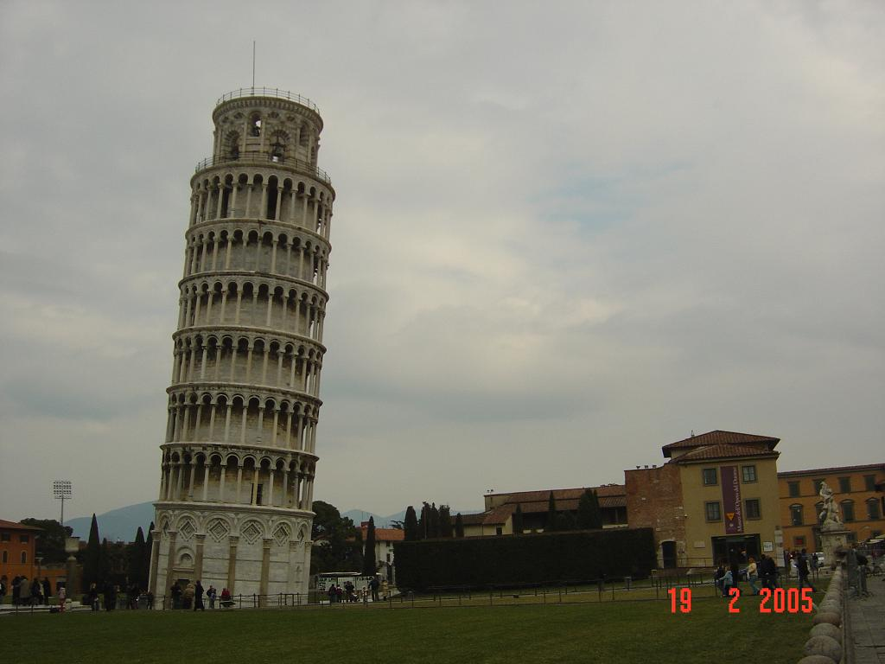
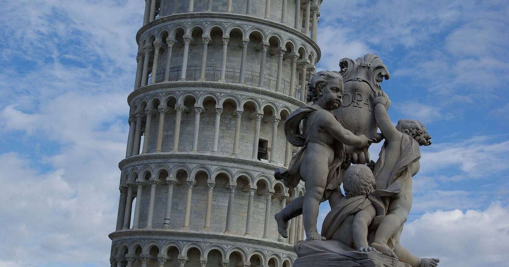
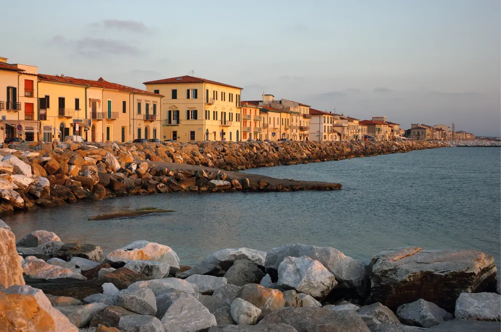
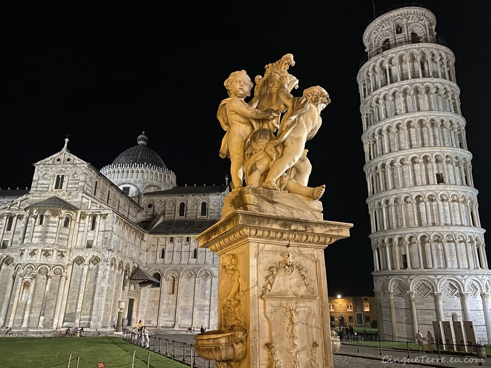
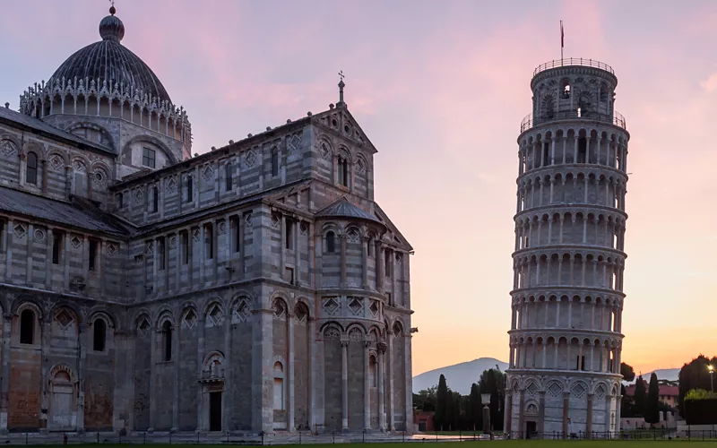
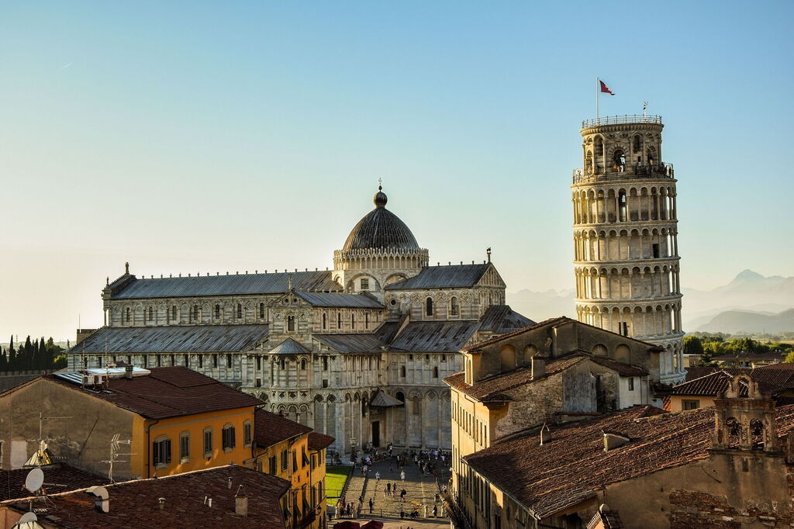
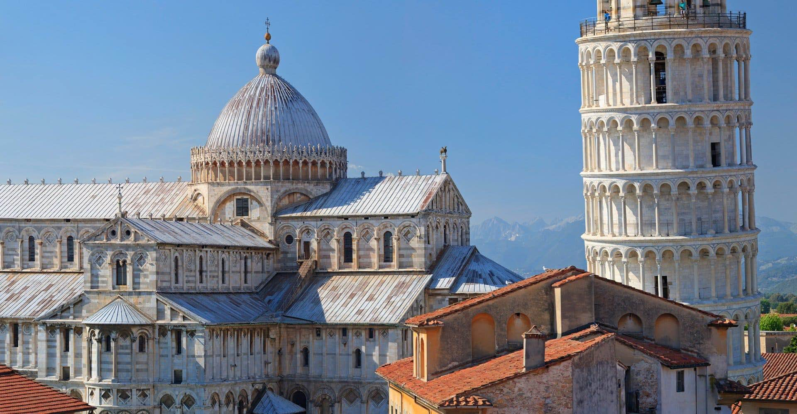

Piza to nie tylko słynny przechył, ale przede wszystkim genialna architektura skupiona na Piazza dei Miracoli. Wewnątrz monumentalnej Katedry (Duomo di Pisa) możecie podziwiać niesamowite mozaiki w apsydzie oraz misternie rzeźbioną ambonę autorstwa Giovanniego Pisano. Wnętrze świątyni, z jej złotym kasetonowym sufitem, emanuje potęgą dawnej republiki morskiej.
W Baptysterium, największym we Włoszech, możecie doświadczyć niesamowitej akustyki. Wewnątrz tej cylindrycznej budowli nawet najcichszy dźwięk echem roznosi się po całej przestrzeni, tworząc niemal mistyczne wrażenie. To miejsce pokazuje, jak średniowieczni budowniczowie łączyli matematyczną precyzję z duchowością.
Camposanto Monumentale to cmentarz, który wygląda jak luksusowy pałac. Wewnątrz długich krużganków kryją się starożytne sarkofagi i fascynujące freski, w tym słynny „Triumf Śmierci”. To oaza spokoju, gdzie wewnątrz rzeźbionych kolumnad można odpocząć od zgiełku turystów i poczuć autentyczny klimat toskańskiej historii.
Nieco dalej od głównego placu, Palazzo Blu oferuje bogate wnętrza dawnej arystokratycznej rezydencji. Wewnątrz odrestaurowanych sal możecie zobaczyć nie tylko cenne obrazy, ale też oryginalne umeblowanie, które pozwala poczuć się jak gość u pizańskich możnych sprzed wieków. To idealne miejsce na spotkanie z kulturą w bardziej intymnej atmosferze.







Czas przejścia: 51 min (3.7 km)